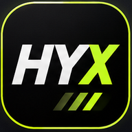

✏️ Editar rutina y actividades
Cambia nombres, minutos, segundos e indicaciones. Duplica o reordena actividades; guarda para usar la rutina cualquier día.
Secuencia del entrenamiento
Respaldo de rutinas
Guarda una copia de tus rutinas en un archivo JSON. Puedes importarlas en otro teléfono o recuperarlas si cambias de dispositivo. Importar agrega copias sin eliminar las rutinas existentes.
Actualizaciones de HYX
Versión instalada: 1.3. HYX comprueba si hay una nueva versión cuando tienes internet. Tus rutinas se guardan por separado del código de la aplicación.
Puedes actualizar cuando termines tu sesión.
Sin comprobaciones todavía.
Instalar HYX en tu celular
Puedes utilizar HYX sin conexión cuando esté instalada. Desde un sitio HTTPS, abre la app en Chrome (Android) o Safari (iPhone) y agrégala a tu pantalla de inicio.
HYX · Funciona sin conexión tras instalarse. Para evitar interrupciones del cronómetro, mantén la app visible y la pantalla activa durante la sesión. Los avisos sonoros pueden estar restringidos por el modo silencio.